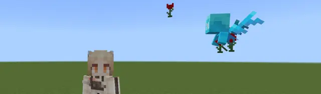
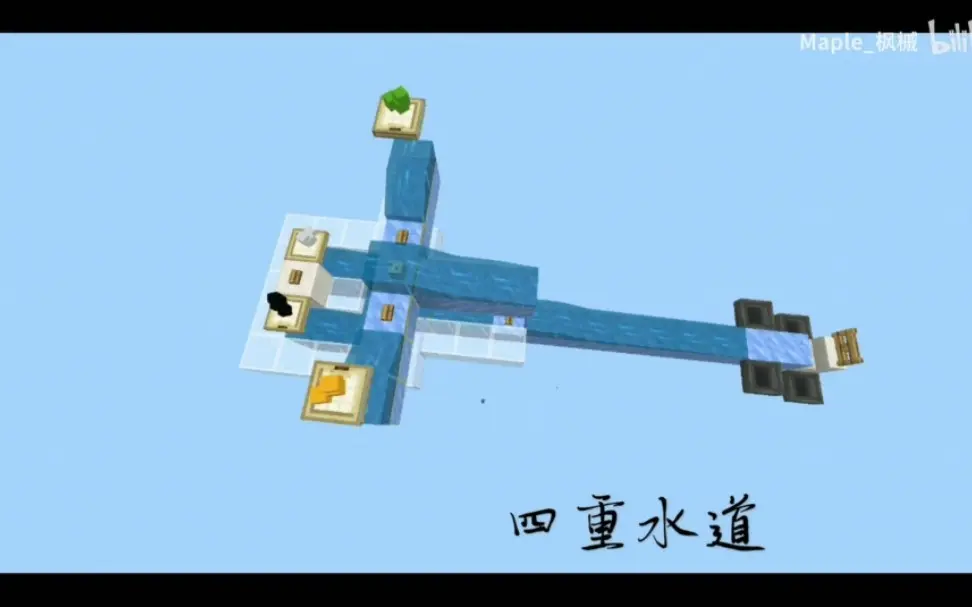

MCBE 关于掉落物的简单研究 ep.1 由限位讲掉落物碰撞箱
写在前面（感谢）
本文借助了 @hhhxiao_ 的 trapdoor 插件完成掉落物轨迹的统计。由于测量精度为小数点后第三位，所以存在偏差的可能性（如方块单个像素为0.0625block，为小数点后第四位）
 [MCBE] 1.16~1.18服务插件Trapdoor介绍与教程
B 站视频 »
[MCBE] 1.16~1.18服务插件Trapdoor介绍与教程
B 站视频 »
本文是与 @Maple_枫溪 共同讨论出来的。Maple为本文的模型提供了很多猜想与思路
本文改自 @Maple_枫溪 的 《碰撞箱研究》
本篇专栏主要结论均在1.16.40服务端测试，其他版本可能会存在出入
由于大部分数据仅为测试结果，没有源码支持，所以仅供参考
本文是以原版材质（即一个完整方块的长宽高均为16像素，单一像素大小为0.0625block）为前提。部分高清材质以及pvp材质可能与原版材质的像素出现差异
1.1、什么是限位
顾名思义，限位是将掉落物限制在一个特定的位置。在储存红石电路（下简称为储电）中，限位一般指将掉落物限制在两个方块中间的位置
限位是一种常见的储电技术，可以让掉落物在水道中享受到冰的低摩擦的情况下，仍然可以被目标漏斗吸取。在这种情况下，掉落物可以快速移动到目标地方，大大降低了因掉落物产生的卡顿时间。同时因为高移速，让掉落物之间彼此间距更大，一定程度上降低了因为漏斗bug受到的影响。所以，理解限位对于储电来说大有裨益
--------------------
1.2、限位的基础原理
1.2.1、掉落物的坐标
掉落物的坐标是这个掉落物实体的正中心，这个坐标可以用于tp和统计掉落物的位置
1.2.2、掉落物的碰撞箱
知晓掉落物的大小是一件很重要的事情
掉落物的碰撞箱是边长0.25格（四个像素大小）的正方体。这个碰撞箱是掉落物和大多数方块进行交互的范围，包括流动水的加速、漏斗的吸入、岩浆的焚烧、在方块内的挤压等
值得注意的是，这些对掉落物产生的效果不会因为接触“部分”的多少而受到改变。如掉落物接触到水流一个像素和掉落物完全浸入水流收到的加速效果相同
对于je的方块凹陷导致的减速，如蜜块、灵魂沙等，在be需要接触到硬碰撞箱外侧才会产生影响
这里解释一下硬碰撞箱的效果，引用茶匙佬生动形象的一句话
“你落地、撞墙，咣叽一下，那个方向上的速度就变成0了” —— OEOTYAN
对于掉落物来说，灵魂沙的碰撞箱完整，不会造成减速
1.2.3、掉落物受到的阻力
当掉落物实体的中心浸入水流时，掉落物受到的阻力为一个低阻力的固定值。这个阻力值略小于蓝冰
当掉落物实体中心没有浸在水流中，掉落物实体会受到下方完整方块的阻力。若下方方块为不完整方块，则会受到不完整方块下方的完整方块的阻力
这里判断为下方方块是指掉落物实体下表面中心点下方的方块。（下文中“掉落物下方的方块均为这个意思”）所以不存在处于两个方块中心掉落物实体将计算两个方块的阻力的情况
当掉落物实体下方的方块的数据值大于等于8，掉落物实体会受到减速。这一条的优先级高于大多数其他条件。特别的，当利用不完整方块将掉落物和方块隔开时则不会受到这个条件。实测1.18已修复，目前不清楚具体版本
--------------------
1.3、限位
1.3.1、限位的简单分类
我们将常见的限位简单地分为三类——箱子、海龟蛋和铁砧（并没有一个常见的确切的名字，这里只是用比较经典的方块作为示例）
（1）箱子限位
即物品中心在限位方块之外，漏斗放在限位方块侧。常见的方块有箱子、蜜块。箱子内陷0.025格，蜜块内陷0.063格
显而易见的，由于此类限位方块内陷的长度远小于掉落物的半径（即0.125格），掉落物下方的方块并不是限位方块下方的方块，即影响掉落物受到的阻力的方块并不是限位方块下方的方块。同时由于掉落物的部分碰撞箱在限位方块所在的格子内，所以掉落物能收到那一侧的水流、漏斗的影响
（2）海龟蛋限位
物品中心在限位方块内，漏斗放在限位方块以外。稳定的限位只有海龟蛋。海龟蛋内陷0.2格
（3）铁砧限位
由于磨石和铁砧内陷0.125格，正好是物品碰撞箱的一半。简单计算一下，当铁砧在x=0时，物品向x+侧靠拢，0.125（铁砧内陷）-0.125（物品半径）=0，物品在铁砧的位置；当物品向x-侧靠拢，（1-0.125（铁砧内陷））+0.125（物品半径）=1，物品在铁砧之外。z轴同理。磨石两侧都是0.125格内陷，无关摆放方法
*1.3.2、如何进行限位
@Maple_枫溪《水道的艺术》：

[mcbe]水道的艺术-和你赌两个币，一定有你没见过的水道 B 站视频 »写在最后（作者的碎碎念）
在mj的粪坑中艰难地挖出了点东西 _(:з」∠)_
和maple一起自闭了一整天，然后摸索出了一些比较明朗的结论
算是可以对一些常见的水道现象做出总结了
由于急着发这一篇专栏，大纲都尚未完善，所以暂时还没有目录
当时最难解释的一个现象，这个视频的第一句话直接给我俩干沉默了 (´；ω；`)
更正后的碎碎念：
好久以前写的，之前群友在sac闲聊的时候发现有些地方不严谨容易产生误解，所以火速更正了
现在看这张图还是很沉默 _(:з」∠)_